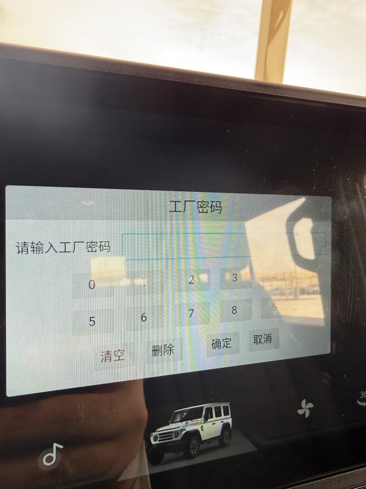
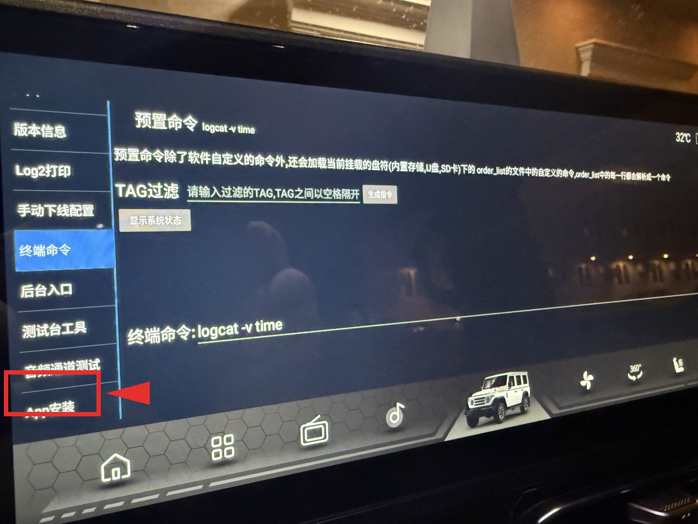

دليل سريع — كل خطوة بصورة من شاشة السيارة
اضغط الزر التالي لتحميل الإصدار الأحدث من AppGallery (v1.9.0) من GitHub مباشرة (حجمه 14 ميجابايت تقريباً):
⬇️ تحميل AppGallery v1.9.0بعد التحميل، انسخه إلى فلاش USB (يفضّل أن يكون بصيغة FAT32). اختياري: غيّر اسم الملف إلى AppGallery.apk ليكون واضحاً.
استخدم أي منفذ USB من منافذ السيارة. ستظهر السيارة فلاش الـ USB كجهاز تخزين خارجي.
افتح الإعدادات (Settings) ← حول الجهاز (About)، ثم اضغط على رقم الإصدار 7 مرات متتالية بسرعة. ستظهر هذه الشاشة:

اكتب الرمز الذي أرسلته لك (工厂密码 = "كلمة سر المصنع"), ثم اضغط زر 确定 (تأكيد).
💡 الأزرار من اليمين إلى اليسار: 取消 (إلغاء)، 确定 (تأكيد)، 删除 (حذف رقم)، 清空 (مسح الكل).
بعد إدخال الرمز، ستظهر قائمة على يسار الشاشة بـ 8 خيارات. انزل إلى آخر خيار في الأسفل — مكتوب App安装 (يعني "تثبيت تطبيق"). اضغط عليه.

⬅️ السهم الأحمر يشير إلى الخيار الصحيح.
ستظهر قائمة الملفات على الـ USB. اضغط على AppGallery.apk.
سيظهر مربع يسأل "هل تريد تثبيت هذا التطبيق؟ / Install this application?". اضغط زر Install / 安装. انتظر حوالي 10 ثوانٍ حتى تكتمل عملية التثبيت ✅
افتح AppGallery من قائمة التطبيقات في الشاشة الرئيسية للسيارة. ستجد بداخله مجموعة من التطبيقات المفيدة جاهزة للتثبيت (YouTube ReVanced، Cromite، خرائط Organic Maps، InnerTune، RadioDroid، وغيرها).
من داخل AppGallery ثبّت ReVanced MicroG قبل YouTube ReVanced. بدونه لن يفتح YouTube ReVanced — سيُغلق فوراً عند التشغيل مع رسالة "You are missing the required MicroG".
💡 اعتبر MicroG بديلاً خفيفاً لخدمات Google التي لا تأتي مثبّتة في السيارة — YouTube ReVanced يحتاجه للتحقق من نفسه ولمزامنة الاشتراكات.
اختر YouTube ReVanced من AppGallery واضغط تثبيت. عند فتحه لأول مرة سيطلب منح بعض الأذونات — اقبلها. تسجيل الدخول بحساب Google اختياري لكن يفيد الاشتراكات وسجل المشاهدة.
⚠️ هذه الخطوة إلزامية على شاشة السيارة — لا تتخطّاها.
داخل YouTube ReVanced اذهب إلى:
الإعدادات ⚙️ ← ReVanced Settings ← Player ← Picture-in-picture ← أوقف كل الخيارات المفعّلة (Disable)
لماذا هذه الخطوة مهمة؟ إذا صغّرت الفيديو أو خرجت من وضع ملء الشاشة على شاشة السيارة، ينتقل YouTube تلقائياً إلى وضع "صورة داخل صورة". هذا الوضع يُجمّد الواجهة ولا تستجيب لأي لمس، وتضطر لإجبار التطبيق على الإغلاق ثم إعادة فتحه. إيقاف الخيار يمنع المشكلة نهائياً.
| المشكلة | الحل |
|---|---|
| "USB device not found" — السيارة لا تتعرّف على الفلاش | أعد توصيل الفلاش، أو جرّب منفذ USB ثاني. تأكد أن الفلاش مهيّأ (formatted) بصيغة FAT32 — وليس exFAT أو NTFS. |
| قائمة المهندسين لا تظهر بعد 7 ضغطات | تأكد أنك في صفحة About / حول الجهاز بالضبط، وليس قائمة الإعدادات الرئيسية. ينبغي أن تضغط على رقم الإصدار 7 مرات متتالية بسرعة. |
| رسالة "Install blocked" أو "المصادر غير معروفة" | اضغط Settings / Allow في المربع — النظام يحتاج إذن لمرة واحدة فقط. |
| AppGallery تثبّت ولكن لا يفتح | أعد تشغيل نظام أندرويد: قائمة المهندسين ← 后台入口 (Backend Entry) ← 重启Android系统 (Restart Android). |
| YouTube ReVanced يُغلق فوراً عند الفتح ("missing MicroG") | ثبّت ReVanced MicroG من داخل AppGallery أولاً، ثم أعد فتح YouTube ReVanced. MicroG شرط لتشغيل YouTube ReVanced ولا يعمل بدونه. |
| YouTube يتجمّد على شاشة صغيرة ولا يستجيب للمس | هذا وضع "صورة داخل صورة" — أوقفه من: YouTube ReVanced ← الإعدادات ← ReVanced Settings ← Player ← Picture-in-picture ← Disable. بعدها أوقف التطبيق وأعد فتحه. |